Created: 02/11/2012
By: dodyrw
Email: info@dodyrw.com
Thank you for purchasing WpApp. If you have any questions that are beyond the scope of this help file, please feel free to email via my user page contact form here. Thanks so much!
WpApp is a Titanium template that enable you to create an iOS app for WordPress blog. There are some benefits from having a mobile app for blog site. It can increase the visitor loyalty, expanding market reader, and also to make more money by using admob.
If you are not familiar with the Titanium platform then refer to the Getting Started with Titanium guide.
In order to fetch blog post data, WpApp require a WpApp WordPress plugin to be installed. The plugin is provided in this package in /wpplugin folder.
WpApp is tested with Titanium Mobile SDK 1.7.5, 1.8.0.1 and XCode 4.2. Tested on iPhone simulator 5 and on device with iOS 4.2 and 5.0.
Titanium will run app.js by default. It will load configuration (config.js), skin (skin/), libraries (lib/) and user interface (ui/) files.
Here are the available user interfaces.
|
Recent News (recent.js) 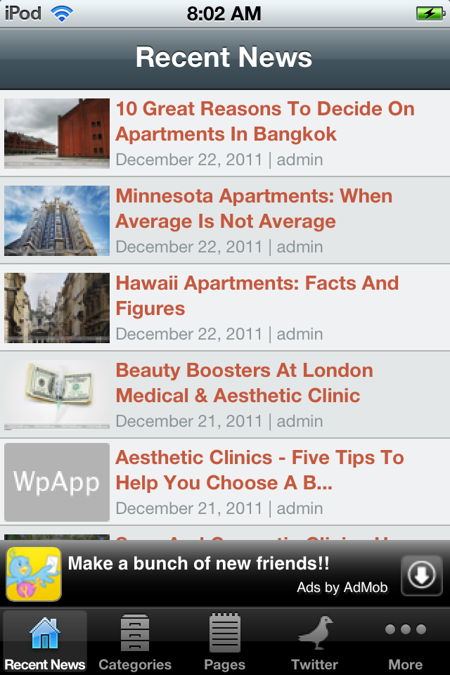 |
Category Dashboard (categ.js) 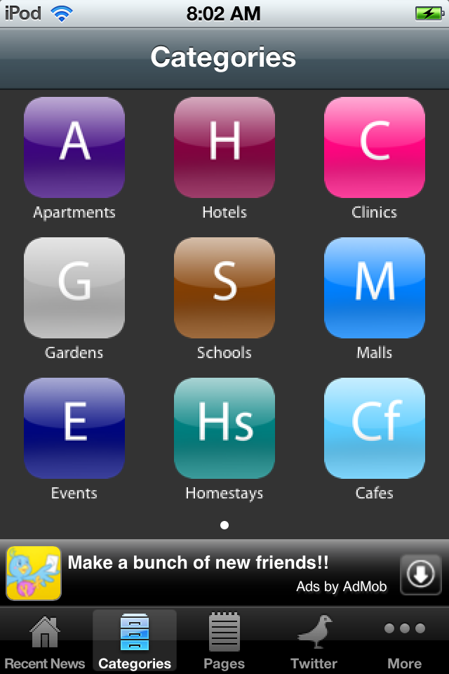 |
|
Category Posts (list.js) 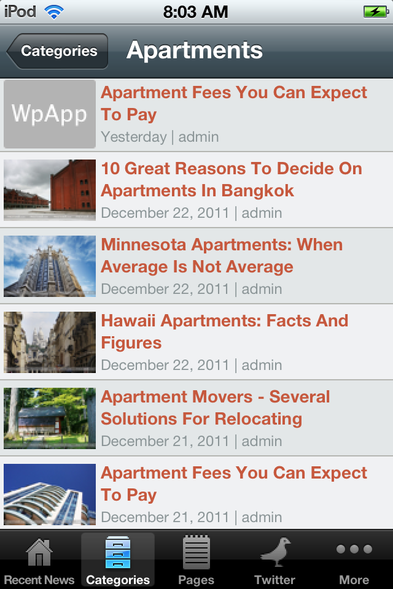 |
Detail Blog Post (post.js) 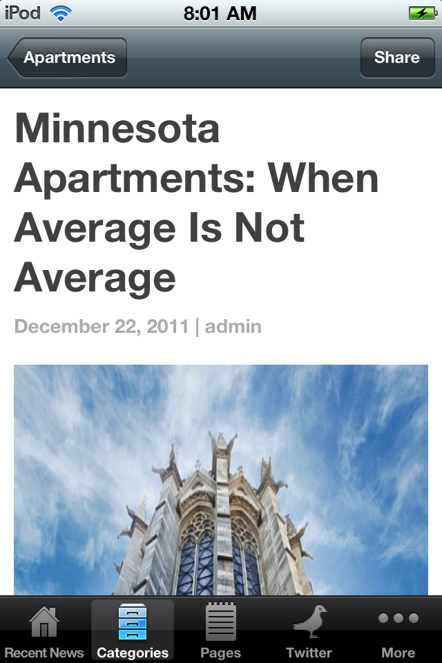 |
|
Pages (page.js) 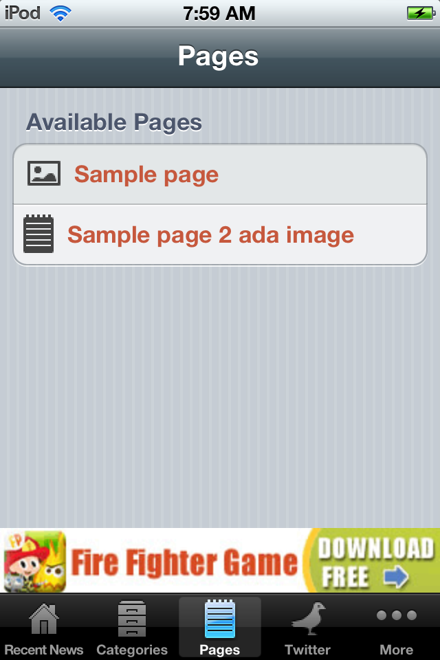 |
Twitter (twitter.js) 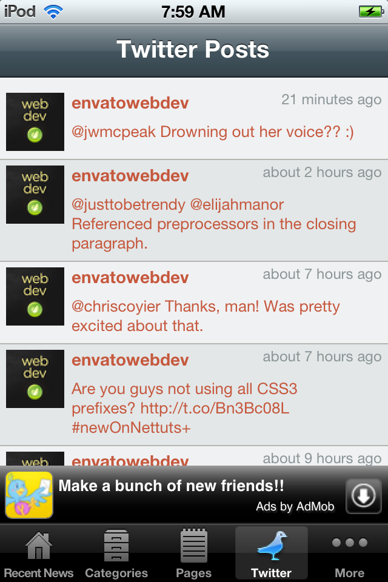 |
|
More 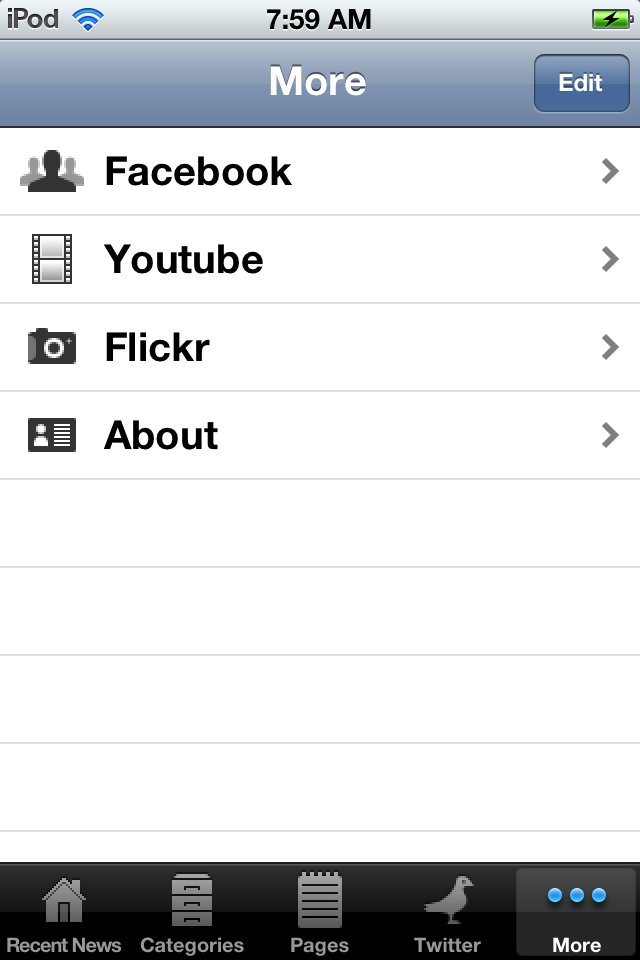 |
|
|
|
Youtube 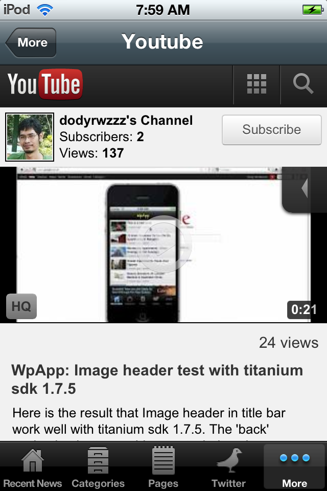 |
|
Flickr 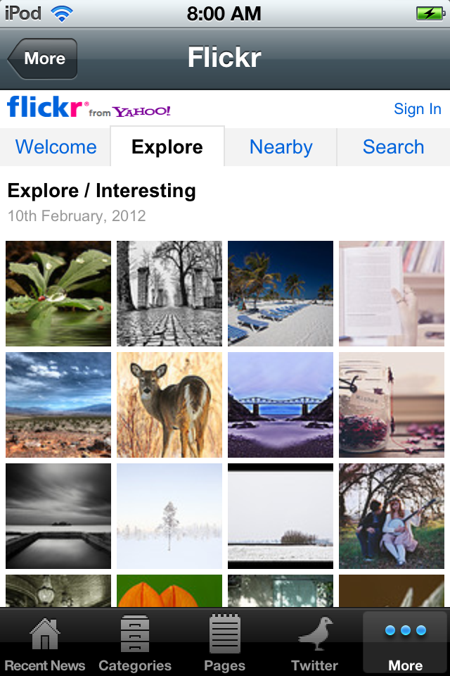 |
Push Notification 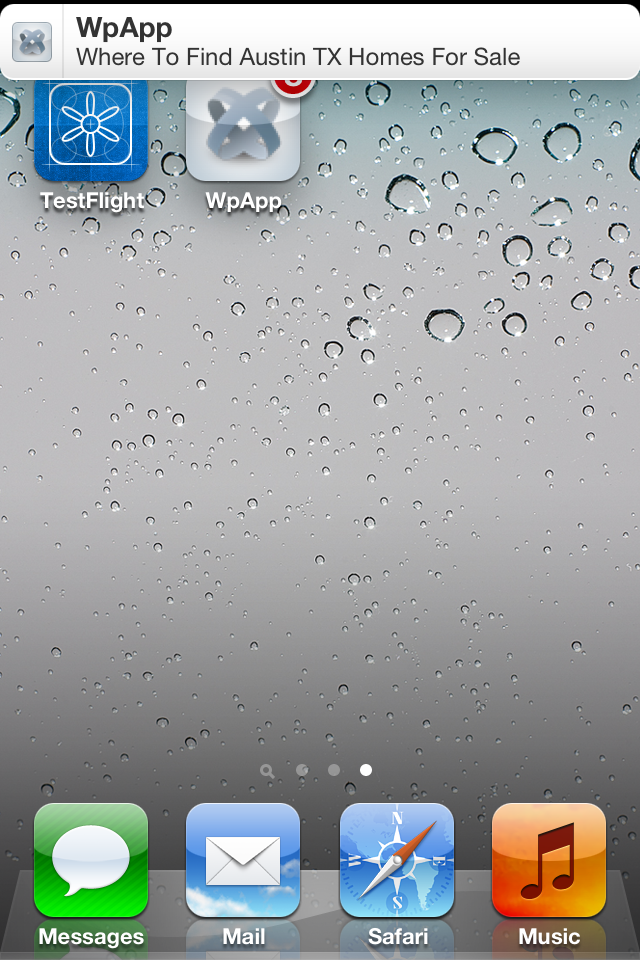 |
WpApp contains a WordPress plugin that must be installed in your blog. This plugin serve as data provider for our apps. To install it, upload wpapp.zip (under folder wpplugin in this package) with WordPress admin panel, just like to install any other WordPress plugins.
After the plugin activated, there will be a new admin menu called WPAPP under Settings menu. In this page, you need to set the API KEY that will provide a secure way to access WordPress data.
The next two options are required to enable push notification with Urban Airship. Please read the following blog post to setup push notification.
Tips: You may want to use hash generator tool like MD5 has generator to generate more secure string combination.
Upgrade from 1.x: Just replace the old files (all wpapp plugin folder) with the new one.
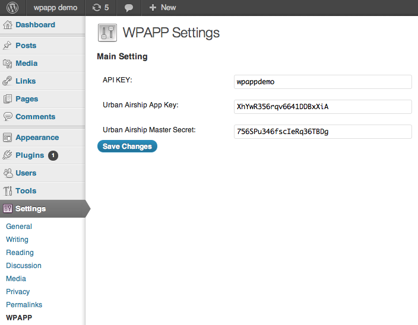WpApp require official Titanium Admob module. You can download it in Titanium Marketplace.
Extract the zip file, if you are using Snow Leopard, then copy ti.admob folder to [HD root folder]/Library/Application Support/Titanium/modules/iphone. Please do not mistaken it with similar folder under user account.
If you are using Lion, copy ti.admob folder to [User Folder]/Library/Application Support/Titanium/modules/iphone
If it is your first time to install Titanium module, you may need to create iphone folder manually.
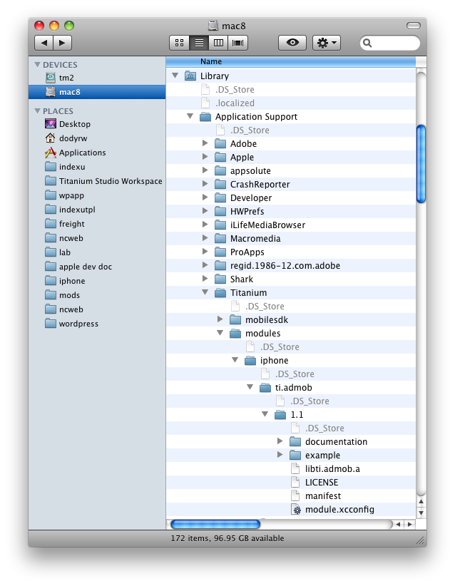Next step, after creating a new project, edit tiapp.xml. In the bottom section, replace
<modules/>
with
<modules> <module version="1.1">ti.admob</module> </modules>
After installing new module, you need to force rebuild. Otherwise it will return error message ti.admob module not found. In order to do this, remove or rename build/ folder under project folder. Or with Titanium Studio > Project > Clean.
var config = {
/**************** app setting ****************/
// wordpress url
"BLOG_URL" : "http://www.domain.tld/wordpress/",
// webmaster email
"WEBMASTER_EMAIL" : "webmaster@domain.tld",
// json data feed option
"JSON_POST_COUNT" : "20",
"JSON_API_KEY" : "123456",
// twitter
"TWITTER_ACCOUNT" : "envatowebdev",
"FACEBOOK_URL" : 'http://m.facebook.com/pages/nicecoder/117973358230454',
"YOUTUBE_URL" : 'http://m.youtube.com/profile?user=dodyrwzzz',
"FLICKR_URL" : 'http://m.flickr.com/photos/58709576@N08',
/**************** optional ****************/
// admob
"ADMOB_PUBLISHER_ID" : "xxxxxxxxxxxx",
"ADMOB_BGCOLOR" : "#fff",
"ADMOB_GENDER" : "",
"ADMOB_KEYWORD" : "",
"ADMOB_TESTING" : "true", // true or false
// urban airship (push notification service)
"URBAN_AIRSHIP_APP_KEY" : 'xxxxxxxxxxxx',
"URBAN_AIRSHIP_MASTER_SECRET" : 'xxxxxxxxxxxx',
"FIX_IMG_POST" : "1",
"FORCE_RELOAD_TIME" : "1800 seconds", // do not refresh automatically during this time
// blog post tableview
"DEFAULT_IMAGE" : "imgs/default.png",
// pages tableview
"DEFAULT_PAGES_IMAGE" : 'imgs/pages/light_doc.png',
// use only one skin, put comment on the other selections
// "SKIN" : "blue",
// "SKIN" : "red",
// "SKIN" : "cloud",
"SKIN" : "brown",
// "SKIN" : "magen",
// "SKIN" : "orange",
// "SKIN" : "silver",
// "SKIN" : "green",
// "SKIN" : "silvercloud",
// "SKIN" : "blueblue",
// "SKIN" : "black",
// "SKIN" : "redlight",
// "SKIN" : "bluedark",
// "SKIN" : "magencyan",
// "SKIN" : "redblack",
// "SKIN" : "greenlight",
// "SKIN" : "orenjiblack",
// "SKIN" : "brownlight",
// "SKIN" : "bluenext",
// "SKIN" : "blacklight",
"DB_NAME" : "WpAppDB"
};
var categ_list = {
"categs": [
{
"slug" : "apartemen-akomodasi",
"label" : "Apartments",
"icon_off": "imgs/categ/a_off.png", // 72x90
"icon_on" : "imgs/categ/a_on.png"
},
{
"slug" : "hotel-akomodasi",
"label" : "Hotels",
"icon_off": "imgs/categ/h_off.png",
"icon_on" : "imgs/categ/h_on.png"
}
]
};
Where to get the category slug? Go to WordPress admin panel > Posts > Categories. Or navigate to:
http://[domain.tld]/wp-admin/edit-tags.php?taxonomy=category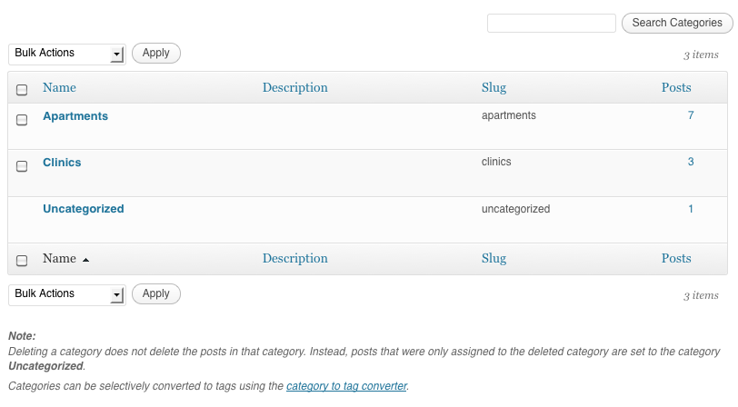
var pages_list = {
"pages": [
{
"slug" : "sample-page",
"label" : "Sample page",
"image" : "imgs/pages/light_flag.png",
},
{
"slug" : "testing-a-page",
"label" : "Sample page 2 ada image"
},
]
};
To get the pages slug, WordPress admin panel > Pages > All pages. Then click quick edit on the page item.
Skin files are under skin/ folder. The code structure is quite easy and self-explained. To make tableview with gradient color, you need to set skin.RECENT_TV_GRADIENT and skin.CATEG_TV_GRADIENT in the bottom section. Otherwise, if you want to use plain color, make sure to comment them.
Click here to see available pre-made skins
var skin = {
// recent news title bar color and image
// if use image, bar color and title should empty
// if use text title, bar image should empty
"RECENT_BAR_IMAGE" : "", // example: imgs/wpapp.png, size: 320x45
"RECENT_BAR_COLOR" : "#9f0007", // example: #ff840a
// category title bar color and image
// if use image, bar color and title should empty
// if use text title, bar image should empty
"CATEG_BAR_IMAGE" : "", // example: imgs/wpapp.png, size: 320x45
"CATEG_BAR_COLOR" : "#9f0007", // example: #ff840a
"CATEG_DASHBOARD_BGCOLOR" : "#333",
// blog post title bar color and image
// if use image, bar color should empty
// if use text title, bar image should empty
"POST_BAR_IMAGE" : "", // example: imgs/wpapp.png, size: 320x45
"POST_BAR_COLOR" : "#9f0007", // example: #ff840a
// about tab bar color and image
// if use image, bar color and title should empty
// if use text title, bar image should empty
"ABOUT_BAR_IMAGE" : "", // example: imgs/wpapp.png, size: 320x45
"ABOUT_BAR_COLOR" : "#9f0007", // example: #ff840a
"WEBVIEW_BAR_IMAGE" : "", // example: imgs/wpapp.png, size: 320x45
"WEBVIEW_BAR_COLOR" : "#9f0007", // example: #ff840a
"TWITTER_BAR_IMAGE" : "", // example: imgs/wpapp.png, size: 320x45
"TWITTER_BAR_COLOR" : "#9f0007", // example: #ff840a
"PAGES_BAR_IMAGE" : "", // example: imgs/wpapp.png, size: 320x45
"PAGES_BAR_COLOR" : "#9f0007", // example: #ff840a
// table view for recent news
"RECENT_TV_BGCOLOR" : "",
"RECENT_TV_BGCOLOR_ALT": "",
"RECENT_TV_SEPARATOR_COLOR": "#000",
"RECENT_TV_TITLE_COLOR": "#fff",
"RECENT_TV_META_COLOR" : "#fff",
// table view for categories
"CATEG_TV_BGCOLOR" : "",
"CATEG_TV_BGCOLOR_ALT": "",
"CATEG_TV_SEPARATOR_COLOR": "#000",
"CATEG_TV_TITLE_COLOR": "#fff",
"CATEG_TV_META_COLOR" : "#fff",
// table view for twitter
"TWITTER_TV_BGCOLOR" : "",
"TWITTER_TV_BGCOLOR_ALT": "",
"TWITTER_TV_SEPARATOR_COLOR": "#000",
"TWITTER_TV_TITLE_COLOR": "#fff",
"TWITTER_TV_META_COLOR" : "#fff",
// table view for pages
"PAGES_TV_BGCOLOR" : "#404040",
"PAGES_TV_BGCOLOR_ALT": "#272727",
"PAGES_TV_TITLE_COLOR": "#fff",
"DUMMY" : ""
};
skin.RECENT_TV_GRADIENT = {
type:'linear',
colors:[ {color:'#404040',position:0.0},{color:'#2f2f2f',position:0.5},{color:'#272727',position:1.0} ]
};
skin.CATEG_TV_GRADIENT = {
type:'linear',
colors:[ {color:'#404040',position:0.0},{color:'#2f2f2f',position:0.5},{color:'#272727',position:1.0} ]
};
skin.TWITTER_TV_GRADIENT = {
type:'linear',
colors:[ {color:'#404040',position:0.0},{color:'#2f2f2f',position:0.5},{color:'#272727',position:1.0} ]
};
WpApp strings are stored in /i18n/[language_code]/strings.xml. You can easily change the strings in this file. If you want to make translation, create a new folder under i18n with the name is language code. For an example, I have put Indonesian translation with folder name id.
Code structure:
<?xml version="1.0" encoding="UTF-8"?>
<resources>
<string name="wpapp_recent">Recent News</string>
<string name="wpapp_categories">Categories</string>
<string name="wpapp_pages">Pages</string>
<string name="wpapp_twitter">Twitter</string>
<string name="wpapp_about">About</string>
<string name="recent_news">Recent News</string>
<string name="categ_categories">Categories</string>
<string name="about">About</string>
<string name="about_reset_data">Reset Data</string>
<string name="about_alert">Do you want to reset data?</string>
<string name="about_yes">Yes</string>
<string name="about_no">No</string>
<string name="about_contact_webmaster">Contact Webmaster</string>
<string name="about_tell_a_friend">Tell a Friend</string>
<string name="about_visit_website">Visit Website</string>
<string name="about_terms_and_conditions">Terms & Conditions</string>
<string name="about_privacy_policy">Privacy Policy</string>
<string name="share">Share</string>
<string name="share_this_on">Share this on...</string>
<string name="share_email">Email</string>
<string name="share_cancel">Cancel</string>
<string name="post_source">Source</string>
<string name="indicator_loading">Loading...</string>
<string name="ptr_pull_to_reload">Pull to reload</string>
<string name="ptr_last_updated">Last Updated: </string>
<string name="ptr_pull_down_to_refresh">Pull down to refresh...</string>
<string name="ptr_release_to_refresh">Release to refresh...</string>
<string name="ptr_reloading">Reloading...</string>
<string name="webmaster_subject">Iphone app feedback</string>
<string name="webmaster_body"></string>
<string name="tell_friend_subject">Interesting iphone app</string>
<string name="tell_friend_body">I'd like to share an interesting iphone app.</string>
<string name="twitter">Twitter Posts</string>
<string name="pages">Pages</string>
<string name="pages_available">Available Pages</string>
<string name="youtube">Youtube</string>
<string name="facebook">Facebook</string>
<string name="flickr">Flickr</string>
</resources>
In order to use this feature, you must do deployment with Titanium Studio. Deployment with XCODE will not render the correct strings.
I've used the following icons and photos.
Once again, thank you so much for purchasing WpApp. As I said at the beginning, I'd be glad to help you if you have any questions relating to this template. No guarantees, but I'll do my best to assist. If you have a more general question relating to the template on CodeCanyon, you might consider visiting the forums and asking your question in the "Item Discussion" section.
Dody Rachmat Wicaksono